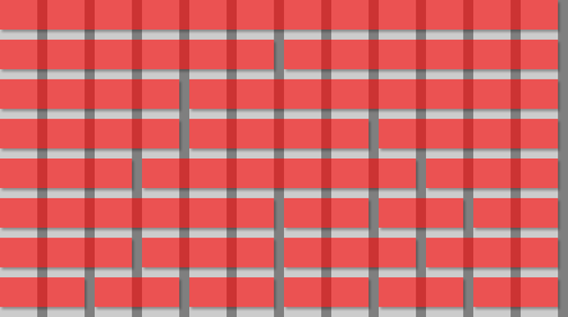
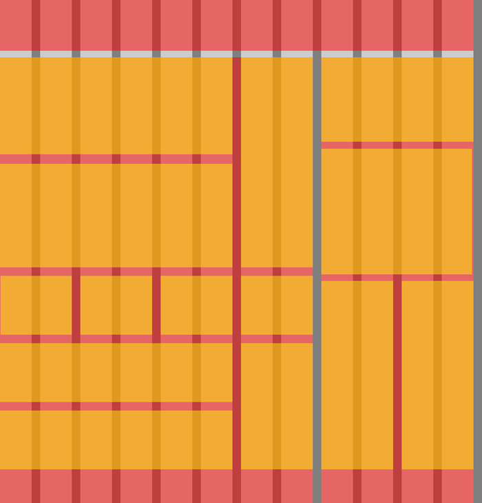
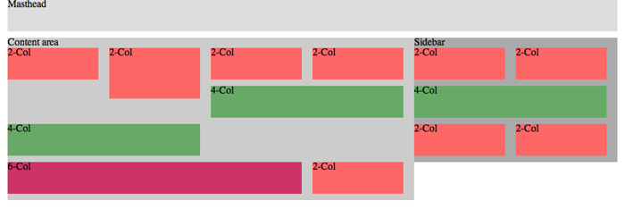

Grid design basics: Grids for Web page layouts
Introduction
Since tables were co-opted for layout purposes, columns have become key to many Web design layouts, and this thinking continued when CSS took over from tables (at least in the minds of savvy designers) for Web-page presentation. However, other fields of layout design don’t think in arbitrary columns, they work with grids, and these form the basis for the structure of page designs. This article will provide the lowdown on grid design for Web pages.
Thinking modular
Grids are a template, a framework within which creativity can flourish. Too many designers spend time looking at a blank canvas, trying to figure out where elements should be positioned, but, if you have a flexible underlying grid, many such problems are already solved for you. It becomes obvious where and how elements should and can be positioned, thereby leaving you, the designer, with more time to work on graphic design and other page components.
Instead of arbitrarily picking column sizes, grids enable you to create a common visual language throughout an entire Web site, rather than deciding things on a page-by-page basis. Components relate to each other, which makes it easier for users to scan content and develop familiarity with it, in a manner similar to text that’s set on a baseline grid (see my Setting Web type to a baseline grid article for more).
Creating a layout grid
Unlike in print, there’s no set canvas size for a Web page. This means one aspect of magazine-oriented grids—working to specific vertical points across an entire page—is, at best, tricky. Generally, it’s best to ensure that a vertical rhythm is maintained (again, see the baseline grids article) but not get hung up on trying to align elements across different page areas (navigation, content, sidebar) and instead focus on working with vertical grid lines.
With the majority of users now having monitors capable of a resolution of 1024 x 768 or higher, the tendency for layouts is towards a width of about 950. For grid design, a 960-pixel total width is a good starting point, because it provides a massive amount of scope for divisions (960 is divisible by 2, 3, 4, 5, 6, 8, 10, 12, 15, 16, 20, 24, 30, 32, 40, 48, 60, 64, 80, 96, 120, 160, 192, 240, 320 and 480).
That said, too many columns can result in excessive complexity, so when working on initial grid designs, stick to about a dozen columns. The reason for working with 12 columns (rather than, say, seven or ten) is because of the flexibility it affords you in being able to divide the layout evenly (2 x 6, 3 x 4) and also in various other combinations, as shown in Figure 1. In that image, the underlying grid is shown in grey—light grey for columns and dark grey for gutters that provide white-space between page elements; the red stripes show how the grid can be divided up.
Note that it’s best to set the gutter widths to an odd number of pixels, because then a one-pixel dividing line can be placed between two columns. If a gutter’s width is an even number of pixels, a one-pixel line can’t sit centrally between two columns.
Figure 1: A 12-column grid system showing a few of the potential available divisions.
By using guides in your graphic design software package, you should be able to work up layouts rapidly, positioning elements such as sidebars and content areas with ease, since your basic grid is already catered for. In Figure 2, the layout has been divided into three main components. At the top, the masthead spans the entire design’s width. Below, the main content area spans eight columns, and a sidebar spans four. Within the sidebar, yellow areas denote potential positions for blocks of content: a full-width piece, an Mid-Page Unit (MPU), and two columns for item lists or advertising. Within the main content area, the grid has enabled us to start dividing up the space for chunks of content, without having to make decisions regarding how wide each block content should be—the grid takes care of that. This speeds up the design process, but also ensures site-wide harmony—assuming the grid is adhered to, a common language will be maintained regarding component sizes. (Download a 12-column Photoshop grid document here.)
Figure 2: A basic layout scamp for a site’s home-page content structure
Taking grids to the Web
When it comes to CSS and grids, it’s best to keep things as simple and modular as possible. That way, you can start with common boilerplate documents and tailor them to individual Web sites. For something with the same basic underlying structure as the design shown in Figure 2 (if not the internal content areas that were shown in yellow), the basic structure is a page within a “wrapper”, which has a content area, a sidebar, and a bunch of nested areas within those sections.
The basic page structure can therefore be marked up as follows:
<div id="wrapper"> <div id="masthead"></div> <div id="contentArea"></div> <div id="sidebar"></div> </div>
Within those areas, you can then place nested divs, with class values that relate to the number of grid columns they span. In the following example, there are three rows of content blocks: the first row has four two-column blocks, the second has a six-column block and a two-column block, and the third has two four-column blocks.
<div id="contentArea"> <div class="twoCol">2-Col</div> <div class="twoCol">2-Col</div> <div class="twoCol">2-Col</div> <div class="twoCol">2-Col</div> <div class="sixCol">6-Col</div> <div class="twoCol">2-Col</div> <div class="fourCol">4-Col</div> <div class="fourCol">4-Col</div> </div>
Purists might argue that these values aren’t semantic. However, since it’s perfectly acceptable to use multiple class values, it makes sense to keep the column values separate and to add further styles to specific elements by way of a section-specific class value:
<div class="sixCol leadArticle">6-Col</div> <div class="twoCol leadArticleImage">2-Col</div>
CSS can then be used to define specific settings (such as background colors or images) for—in the above code’s case—the lead article and lead article image.
Styling the online grid
When it comes to CSS, gutters make things a little complicated. Each content box within a typical page is a floated box, and gutters either have to form part of that box (by being included in its width value or by adding on the gutter to the column width via padding) or be set adjacent to it by using a margin. The required method depends on the component being styled.
Figure 3: Taking grids online using basic HTML divs and CSS styling
In Figure 3 (above), the styled page is shown. (Note that this figure again does not denote the same layout as Figure 2.) In our example, the grid has 12 columns and a 960-pixel width, as already explained. Therefore, each column/gutter pair is 80px. The gutter is 17px, meaning each column is 63px wide. When a content area spans n columns, it also spans n-1 gutters, and so a two-column box has a width of 143px (63+17+63), a four-column box has a width of 303px (63+17+63+17+63+17+63), and so on. An easier means of calculating the widths is just to multiply 80px by the number of columns the box needs to span and then subtract a gutter width of 17px.
Thus, for the internal boxes shown in Figure 3, we end up with CSS such as the following:
.twoCol, .fourCol, .sixCol {
margin-right: 17px;
float: left;
}
.twoCol {
width: 143px;
}
.fourCol {
width: 303px;
}
.sixCol {
width: 463px;
}
Note the grouped selector that adds a margin-right setting to every box type, to ensure it has a correct gutter at its right-hand side, and that subsequent content is therefore positioned correctly. (In the example screen-grabs, colors and bottom margins have also been added for clarity.)
For containing divs, we need a different method. Although the sidebar width should technically be as per the four-column box, if we set it like this, its internal content won’t be wide enough to house two two-column boxes and their margin-right values, so they’d sit one under the other. Therefore, the width settings for containing boxes must incorporate the right-most gutter. The math for this is simple: 80px multiplied by the number of grid columns the relevant element spans:
#wrapper {
width: 960px;
margin: 0 auto;
}
#masthead {
width: 960px;
}
#contentArea {
float: left;
width: 640px;
}
#sidebar {
float: left;
width: 320px;
}
(Note that for Internet Explorer 6 and below to behave, overflow: hidden; may need to be added to the #contentArea and #sidebar rules via CSS attached using a conditional comment.)
Further thoughts
For many designs, the mark-up will need further additions, slightly disrupting the “harmony” of the pure grid-oriented code. When heights of floated elements differ, they stack linearly, and this can mess up the layout, as shown in Figure 4.
Figure 4: Broken stacking due to inconsistent heights of floated elements.
To get around this, surround each “row” of boxes/content blocks in a clearing div as follows:
<div class="rowContainer"> [a row of boxes] </div>
Then, set the CSS for .rowContainer to clear: left;. This will fix flow issues in all major browsers. (Note that future CSS will enable you to solve this problem without clearing divs, perhaps via the use of display: table. However, with support in current versions of Internet Explorer unavailable, manual clearing is needed for the time being.)
Figure 5: Repaired stacking by using a clearing mechanism
Summary
By creating a flexible grid, you should be able to more easily work up designs. Once you’re comfortable working with a grid, you can amend your workflow and boilerplates to suit. If you find a 12-column grid restrictive, double the number of columns in your default documents. Alternatively, create a set of documents, each with a different number of columns, and use the relevant one for any given project.
A final tip is to use temporary background images to ensure your page is adhering to your grid. Export the relevant layers of your graphic design document and apply the grid as a background to your site’s wrapper or body, as shown in Figure 6.

Figure 6: The Snub Communications Web site with its underlying grid image activated
Leave the rule in your CSS and comment it out prior to launching your site. This will enable you to rapidly “turn on” the visual grid when you make updates, ensuring your common site-wide language isn’t polluted by items breaking the grid and messing up your design.
This article is licensed under a Creative Commons Attribution, Non Commercial - Share Alike 2.5 license.
Comments
The forum archive of this article is still available on My Opera.
No new comments accepted.